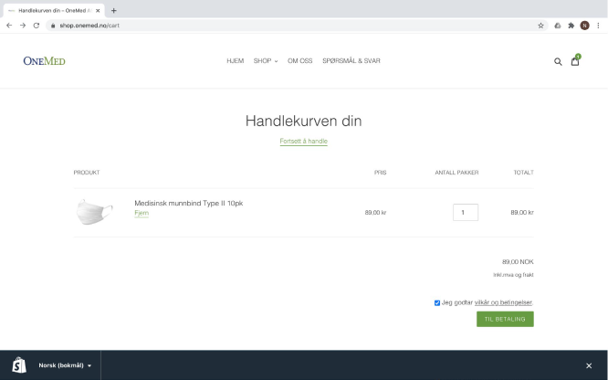

ONEMED

OPPGAVEN
Brief: Designe og utvikle en hjemmeside for Norges ledende
leverandør avhelsepleieprodukter der de i starten skal selge munnbind,
men som på sikt er ønsket at skal inneholde andre produkter, til
privatkunder og bedriftskunder. Basen (og domenet) er via Shopify, men
designet er utarbeidet for å passe kundens profil og være brukervennlig.
Jeg har bygget den opp og jeg har også gått inn og endret på HTML slik
at siden skal passe konseptet og kunden og være enkel, funksjonell og
brukervennlig for brukerne.
Min rolle i dette prosjektet har vært å designe og utvikle en ny
B2C hjemmeside for kunden, samt vært prosjektleder for prosjektet.
PROSJEKTDETALJER
Kunde: OneMed Norge
Leveranse: Konseptutvikling, UX/UI design, prosjektledelse,
ferdig produkt
Tidsramme: 8 uker
Link til nettside:
Klikk her
Utførelsen
Startsiden skulle være enkel og oversiktlig. I startfasen er det kun to
typer munnbind som selges; 10pk og 50pk. Disse er det enkel tilgang til på
startsiden. Øverst på siden er menyen. Der kan brukeren enkelt shoppe de
ulike munnbindene (og andre produkter når de blir lagt til), samt finne
svar på eventuelle spørsmål og info om hvem kunden er. ”Om oss” ønsket
kunden å ha synlig øverst slik at brukere som ikke har hørt om de før kan
finne ut at de er en seriøs aktør, og dermed være trygge på at de kan
kjøpe godkjente munnbind fra de. I tillegg la jeg til lenker nederst på
siden, samt en lenke til smittevernsreglene til Folkehelseinstituttet da
det er smittevernsutstyr kunden selger.
Forsiden
10pk
Produktsidene for 10pk og 50pk er like. Her inne kan kunden enkelt se
produktegenskapene, brukerveiledning og bilder av produktet. I tillegg har
jeg linket til forskjellene mellom type I og type II munnbind, slik at
brukerne kan være sikre på at produktet OneMed selger er ordentlig og
godkjent. Her har jeg også gjort det enkelt for kunden å forstå at det er
antall pakker den kjøper, slik at man unngår forvirring og frustrasjon.
Frustrerte brukere er det ingen som vil ha, så da er det viktig å lage
nettsidene enkle og brukervennlige.
Kassen
I handlekurven har jeg endret språket til å passe OneMed bedre. I tillegg
har jeg gått inn og endret koden for å få ”vilkår & betingelser” til å
åpnes opp i et nytt vindu. Dette fordi man ikke ønsker at kunden, når den
først er inne i handlekurven og er klar for å betale, skal forlate siden
og kanskje miste det den har lagt i handlekurven. Igjen; jeg har gjort det
enkelt og funksjonelt for kunden for å unngå frustrasjoner.

Oppsummering
Dette prosjektet har vært veldig vellykket og kunden er godt fornøyd. Jeg
har gjort eventuelle endringer underveis og har en løpende kontakt med
kunden for å sikre optimalisering og brukervennlighet på nettsiden slik at
de ikke mister noen kunder noen steder.